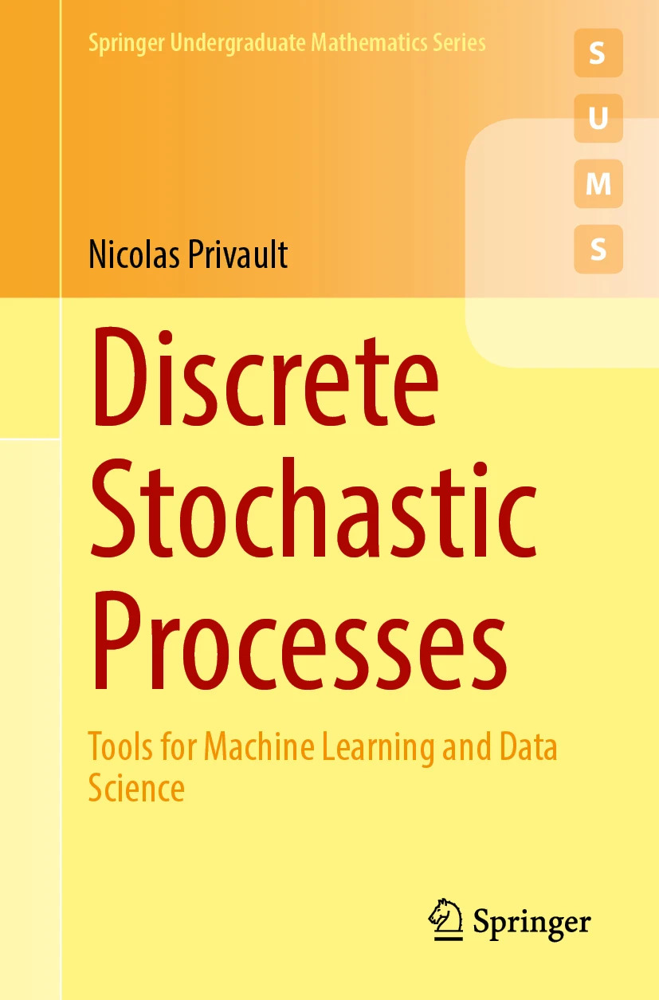
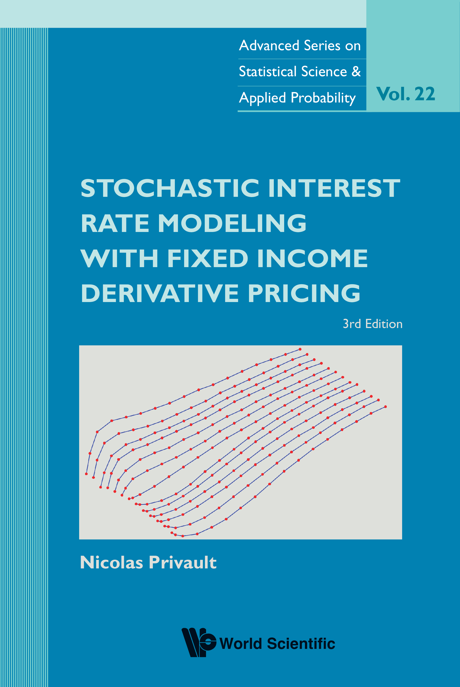
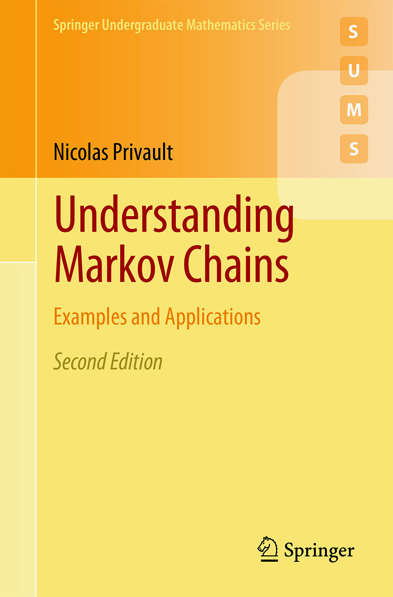
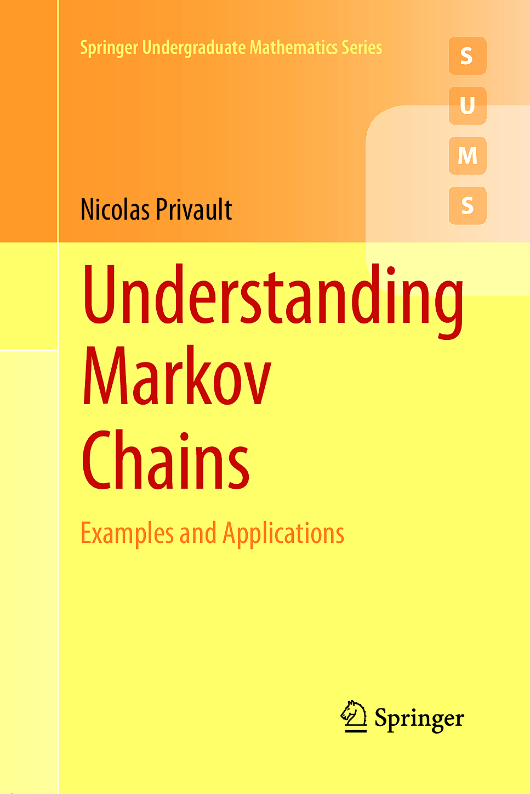
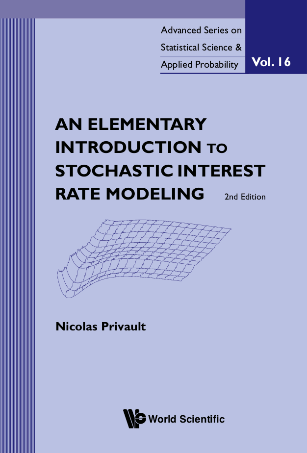

Discrete Stochastic Processes - Tools for Machine Learning and Data Science, Springer Undergraduate Mathematics Series, Springer, 2024, 260 pages.

Introduction to Stochastic Finance with Market Examples, Second Edition, Chapman & Hall/CRC Financial Mathematics Series, 2022, 662 pages.
e-book - solutions manual
Stochastic Interest Rate Modeling with Fixed Income Derivative Pricing,
Third Edition,
Advanced Series on Statistical Science and Applied Probability, Vol. 22, World Scientific, 2021, 368 pages.

(Second Edition) Understanding Markov Chains - Examples and Applications,
Springer Undergraduate Mathematics Series, Springer, 2018, 373 pages.
errata,
codes

(with U. Franz)
Probability on Real Lie Algebras,
Cambridge Tracts in Mathematics, 2016, 302 pages.
Stochastic Finance - An Introduction with Market Examples, Chapman & Hall/CRC Financial Mathematics Series, 2014, 441 pages.
solutions manual
(First Edition) Understanding Markov Chains - Examples and Applications,
Springer Undergraduate Mathematics Series, Springer, 2013, 354 pages.
errata

(Second Edition) An Elementary Introduction to Stochastic Interest Rate Modeling,
Second Edition,
Advanced Series on Statistical Science and Applied Probability, Vol. 16, World Scientific, 2012, 242 pages.
e-book

(with A. Kohatsu-Higa and S.J. Sheu, co-editors)
Stochastic Analysis with Financial Applications,
Progress in Probability, Vol. 65,
Springer Basel, 2011,
429 pages.
随机利率模型及相关衍生品定价, 南开大学出版社, 2010.
pdf
Stochastic Analysis in Discrete and Continuous Settings: With Normal Martingales,
Lecture Notes in Mathematics,
Springer,
2009,
319 pages.
pdf
(First Edition) An Elementary Introduction to Stochastic Interest Rate Modeling,
Advanced Series on Statistical Science and Applied Probability, Vol. 12, World Scientific, 2008, 192 pages.